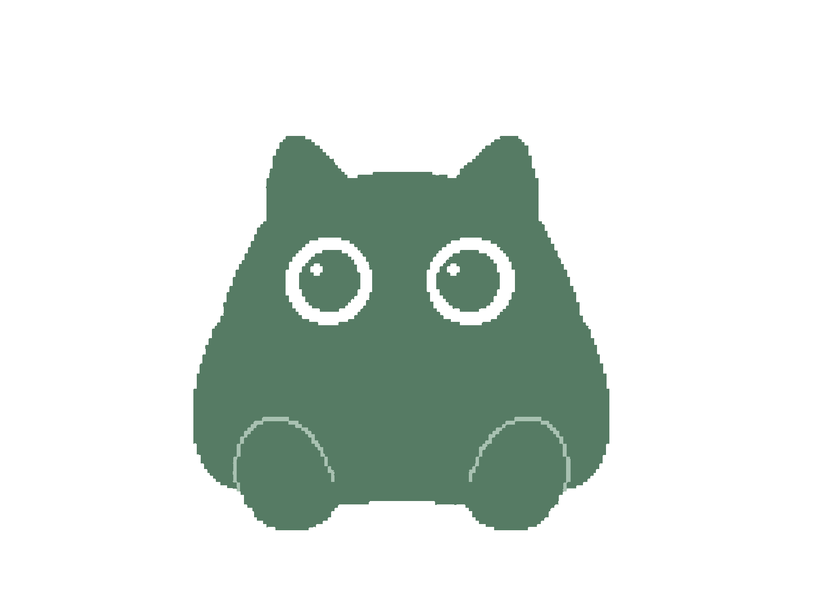

Cowork
Everyday work across your tools: a morning Slack digest, inbox triage, release notes, research briefs. Every task runs in a private sandbox folder, and any task can run on a schedule.
💬 Slack digests🗓️ Scheduled tasks🔎 Research
Yuzu is a local AI agent for your Mac. Connect Slack, GitHub, Notion, or any MCP server, teach it your workflows as skills, and let it work across your tools and your code. The model runs on your machine, and so do your files and transcripts.
Free and open source under AGPL-3.0 · No account · No cloud
Switch between a quiet writing room and a hands-on workspace. Both share the same model, the same harness, and the same rules.
Everyday work across your tools: a morning Slack digest, inbox triage, release notes, research briefs. Every task runs in a private sandbox folder, and any task can run on a schedule.
Open any folder and work on it. Yuzu reads, searches, edits, and runs commands there, pulls context from GitHub, Sentry, or Linear, and asks before it changes anything.

MCP connects Yuzu to the tools you already use. Skills teach it how your team uses them. Together, a model on your Mac does real work across Slack, GitHub, Notion, and more.
“Summarize what I missed in #eng since yesterday and draft replies to anything that mentions me.”
“Review the open PRs, check each against our style skill, and leave a summary on every one.”
“Turn the TODOs in this folder into issues, tagged by area and linked to the right files.”
“Pull last night's top crash, find the code path in this repo, and propose a fix.”
“Write this week's release notes from merged PRs and file them in our changelog.”
“Compare three alternatives to our job queue in a table and save it next to the design doc.”
Ask “install the DuckDuckGo MCP server” and the agent writes the entry, connects it, and starts using it. Token-based servers go in Connectors or mcp.json:
"slack": { "command": "npx", "args": ["-y", "@modelcontextprotocol/server-slack"], "env": { "SLACK_BOT_TOKEN": "xoxb-…" } }, "github": { "url": "https://api.githubcopilot.com/mcp/", "headers": { "Authorization": "Bearer …" } }
/commandsA skill is a folder with a SKILL.md and any scripts it needs. Commit it to .yuzu/skills/ and your whole team gets it.
--- name: standup description: Use for a standup or daily update. slash: true --- 1. Read my commits since the last workday. 2. Read Linear issues assigned to me that moved. 3. Read my messages in #eng and #product. 4. Write Done, Doing, Blocked. Link everything. 5. Post to #standup after I approve.
/standupcustomize-yuzu edits Yuzu itselfA complete agent loop with tools, permissions, memory, and metrics, built natively in Swift for Apple Silicon.
Runs on uzu. Yuzu picks the largest Mirai-quantized model that fits in half your RAM and downloads it once.
Thinking, text, and tool calls stream in as they happen. Replies render as Markdown with themed code blocks.
Context in use, decode tokens per second, and the CPU and RAM used by the model process itself.
Local and remote servers, OAuth sign-in, Keychain tokens. Tools, prompts, and resources all reach the agent.
Team workflows as SKILL.md files with their own scripts, run as /commands. Hand side quests to a subagent.
Every message lands in SQLite before the next turn. Long threads compact into a summary and keep the recent tail.
Cycle with the button under the Code composer. The Plan agent stays read-only in every mode.
xattr -dr com.apple.quarantine /Applications/Yuzu.app
git clone https://github.com/adityachauhan0/yuzu cd yuzu open App/Yuzu.xcodeproj
One download, one model, and an assistant that never leaves your desk.